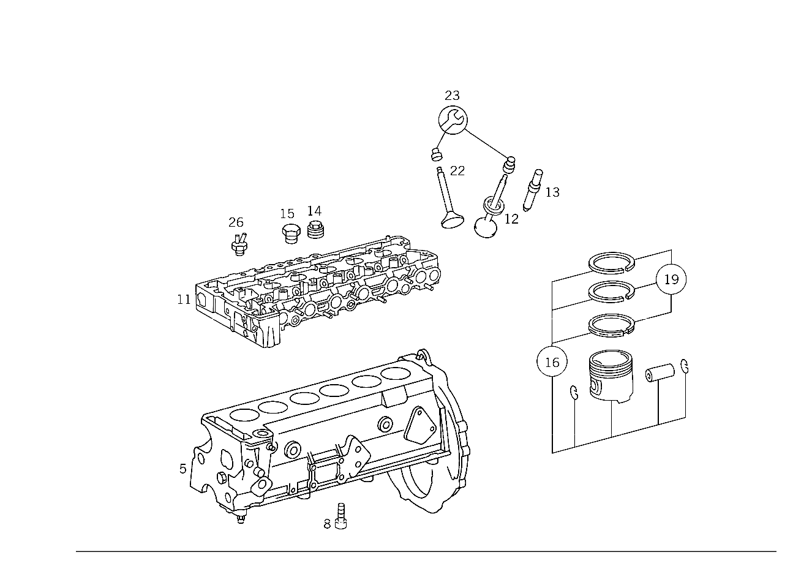

| № | Артикул | Название | Кол. | Примечание | Ограничение |
|---|---|---|---|---|---|
| 5 | A 110 010 03 06 | БЛОК ЦИЛИНДРОВ | 1 | С ПОРШНЕМ Z 12.367/07, Z 12.367/08 [417] БОЛЬШЕ НЕ ПОСТАВЛЯЕТСЯ, ЗАКАЗЫВАТЬ КОМПЛЕКТ ПОСТАВКИ | |
| 5 | A 110 010 03 06 | БЛОК ЦИЛИНДРОВ | 1 | С ПОРШНЕМ Z 12.367/13, Z 12.367/14 [417] БОЛЬШЕ НЕ ПОСТАВЛЯЕТСЯ, ЗАКАЗЫВАТЬ КОМПЛЕКТ ПОСТАВКИ | |
| 5 | A 110 010 05 06 | БЛОК ЦИЛИНДРОВ | 1 | С ПОРШНЕМ Z 12.367/13, Z 12.367/14 [417] БОЛЬШЕ НЕ ПОСТАВЛЯЕТСЯ, ЗАКАЗЫВАТЬ КОМПЛЕКТ ПОСТАВКИ | |
| 8 | N 914020 006014 | Винт с неспадающей шайбой | - | Z 12.367/07, Z 12.367/08 | |
| 8 | N 000912 006022 | Винт | 5 | МАСЛЯНЫЙ КАРТЕР; M6X22 Z 12.367/07, Z 12.367/08 | |
| 8 | N 914020 006014 | Винт с неспадающей шайбой | - | Z 12.367/13, Z 12.367/14 | |
| 8 | N 000912 006022 | Винт | - | МАСЛЯНЫЙ КАРТЕР; M6X22 Z 12.367/13, Z 12.367/14 | |
| 11 | A 110 010 76 20 | ГОЛОВКА БЛОКА ЦИЛИНДРОВ | - | Z 12.367/07, Z 12.367/08 | |
| 11 | A 110 010 53 21 | ГОЛОВКА БЛОКА ЦИЛИНДРОВ | - | Z 12.367/07, Z 12.367/08 | |
| 11 | A 110 010 63 21 | ГОЛОВКА БЛОКА ЦИЛИНДРОВ | 1 | Z 12.367/07, Z 12.367/08 | |
| 11 | A 110 010 76 20 | ГОЛОВКА БЛОКА ЦИЛИНДРОВ | - | Z 12.367/13, Z 12.367/14 | |
| 11 | A 110 010 53 21 | ГОЛОВКА БЛОКА ЦИЛИНДРОВ | - | Z 12.367/13, Z 12.367/14 | |
| 11 | A 110 010 63 21 | ГОЛОВКА БЛОКА ЦИЛИНДРОВ | 1 | Z 12.367/13, Z 12.367/14 | |
| 12 | A 130 053 00 32 | - КОЛЬЦО СЕДЛА КЛАПАНА | - | Z 12.367/13, Z 12.367/14 | |
| 12 | A 110 053 15 32 | - КОЛЬЦО СЕДЛА КЛАПАНА | 6 | ВЫПУСК, НОРМАЛ. 40.10 MM Z 12.367/13, Z 12.367/14 [402] БОЛЬШЕ НЕ ПОСТАВЛЯЕТСЯ | |
| 12 | A 110 053 01 32 | - КОЛЬЦО СЕДЛА КЛАПАНА | - | Z 12.367/13, Z 12.367/14 | |
| 12 | A 110 053 17 32 | - КОЛЬЦО СЕДЛА КЛАПАНА | 6 | ВЫПУСК, РЕМОНТ. ИСПОЛНЕНИЕ 41.30 MM Z 12.367/13, Z 12.367/14 [402] БОЛЬШЕ НЕ ПОСТАВЛЯЕТСЯ | |
| 13 | A 110 050 34 24 | - НАПРАВЛЯЮЩАЯ КЛАПАНА | - | Z 12.367/13, Z 12.367/14 | |
| 13 | A 110 050 65 24 | - НАПРАВЛЯЮЩАЯ КЛАПАНА | 6 | ВЫПУСК Z 12.367/13, Z 12.367/14 [064] 15.044-15.051 MM | |
| 13 | A 110 050 35 24 | - НАПРАВЛЯЮЩАЯ КЛАПАНА | - | Z 12.367/13, Z 12.367/14 | |
| 13 | A 110 050 66 24 | - НАПРАВЛЯЮЩАЯ КЛАПАНА | 6 | РЕМОНТ.ИСПОЛНЕНИЕ;ВЫПУСК 15.20 MM Z 12.367/13, Z 12.367/14 [402] БОЛЬШЕ НЕ ПОСТАВЛЯЕТСЯ | |
| 13 | A 110 050 36 24 | - НАПРАВЛЯЮЩАЯ КЛАПАНА | - | Z 12.367/13, Z 12.367/14 | |
| 13 | A 110 050 67 24 | - НАПРАВЛЯЮЩАЯ КЛАПАНА | 6 | РЕМОНТ.ИСПОЛНЕНИЕ;ВЫПУСК 15.40 MM Z 12.367/13, Z 12.367/14 [402] БОЛЬШЕ НЕ ПОСТАВЛЯЕТСЯ | |
| 14 | A 110 997 12 30 | - ЗАГЛУШКА РЕЗЬБОВАЯ | 2 | Z 12.367/07, Z 12.367/08 | |
| 14 | A 110 997 12 30 | - ЗАГЛУШКА РЕЗЬБОВАЯ | 2 | Z 12.367/13, Z 12.367/14 | |
| 15 | N 007604 014106 | Резьбовая пробка | - | Z 12.367/07, Z 12.367/08 | |
| 15 | A 094 990 16 08 | Резьбовая пробка | 1 | Z 12.367/07, Z 12.367/08 | |
| 15 | N 007604 014106 | Резьбовая пробка | - | Z 12.367/13, Z 12.367/14 | |
| 15 | A 094 990 16 08 | Резьбовая пробка | 1 | Z 12.367/13, Z 12.367/14 | |
| 16 | A 110 030 72 17 | ПОРШЕНЬ | 6 | НОРМАЛЬНО 86mm Z 12.367/07, Z 12.367/08 | |
| 16 | A 110 030 73 17 | ПОРШЕНЬ | 6 | РЕМОНТНАЯ ГРУППА I 86.50MM Z 12.367/07, Z 12.367/08 | |
| 16 | A 110 030 74 17 | ПОРШЕНЬ | 6 | РЕМОНТНАЯ ГРУППА II Z 12.367/07, Z 12.367/08 [402] БОЛЬШЕ НЕ ПОСТАВЛЯЕТСЯ | |
| 16 | A 110 030 72 17 | ПОРШЕНЬ | 6 | НОРМАЛЬНО 86mm Z 12.367/13, Z 12.367/14 | |
| 16 | A 110 030 75 17 | ПОРШЕНЬ | 6 | НОРМАЛЬНО 86mm Z 12.367/13, Z 12.367/14 | |
| 16 | A 110 030 73 17 | ПОРШЕНЬ | 6 | РЕМОНТНАЯ ГРУППА I 86.50MM Z 12.367/13, Z 12.367/14 | |
| 16 | A 110 030 76 17 | ПОРШЕНЬ | 6 | РЕМОНТНАЯ ГРУППА I 86.50MM Z 12.367/13, Z 12.367/14 | |
| 16 | A 110 030 74 17 | ПОРШЕНЬ | 6 | РЕМОНТНАЯ ГРУППА II Z 12.367/13, Z 12.367/14 [402] БОЛЬШЕ НЕ ПОСТАВЛЯЕТСЯ | |
| 16 | A 110 030 77 17 | ПОРШЕНЬ | 6 | РЕМОНТНАЯ ГРУППА II Z 12.367/13, Z 12.367/14 | |
| 19 | A 004 586 00 03 | - РЕМКОМПЛЕКТ | - | Z 12.367/07, Z 12.367/08 | |
| 19 | A 004 586 35 03 | - РЕМКОМПЛЕКТ | - | Z 12.367/07, Z 12.367/08 | |
| 19 | A 001 030 32 24 | - КОЛЬЦО ПОРШНЕВОЕ | 6 | НОРМАЛЬНО Z 12.367/07, Z 12.367/08 | |
| 19 | A 004 586 01 03 | - РЕМКОМПЛЕКТ | - | Z 12.367/07, Z 12.367/08 | |
| 19 | A 004 586 36 03 | - РЕМКОМПЛЕКТ | - | Z 12.367/07, Z 12.367/08 | |
| 19 | A 001 030 33 24 | - КОЛЬЦО ПОРШНЕВОЕ | 6 | КОЛЬЦО ПОРШНЕВОЕ Z 12.367/07, Z 12.367/08 [402] БОЛЬШЕ НЕ ПОСТАВЛЯЕТСЯ | |
| 19 | A 004 586 02 03 | - РЕМКОМПЛЕКТ | - | Z 12.367/07, Z 12.367/08 | |
| 19 | A 004 586 37 03 | - РЕМКОМПЛЕКТ | - | Z 12.367/07, Z 12.367/08 | |
| 19 | A 001 030 34 24 | - КОЛЬЦО ПОРШНЕВОЕ | 6 | РЕМОНТНАЯ ГРУППА II Z 12.367/07, Z 12.367/08 | |
| 19 | A 004 586 00 03 | - РЕМКОМПЛЕКТ | - | Z 12.367/13, Z 12.367/14 | |
| 19 | A 004 586 35 03 | - РЕМКОМПЛЕКТ | - | Z 12.367/13, Z 12.367/14 | |
| 19 | A 001 030 32 24 | - КОЛЬЦО ПОРШНЕВОЕ | 6 | НОРМАЛЬНО Z 12.367/13, Z 12.367/14 | |
| 19 | A 004 586 01 03 | - РЕМКОМПЛЕКТ | - | Z 12.367/13, Z 12.367/14 | |
| 19 | A 004 586 36 03 | - РЕМКОМПЛЕКТ | - | Z 12.367/13, Z 12.367/14 | |
| 19 | A 001 030 33 24 | - КОЛЬЦО ПОРШНЕВОЕ | 6 | РЕМОНТНАЯ ГРУППА I Z 12.367/13, Z 12.367/14 [402] БОЛЬШЕ НЕ ПОСТАВЛЯЕТСЯ | |
| 19 | A 004 586 02 03 | - РЕМКОМПЛЕКТ | - | Z 12.367/13, Z 12.367/14 | |
| 19 | A 004 586 37 03 | - РЕМКОМПЛЕКТ | - | Z 12.367/13, Z 12.367/14 | |
| 19 | A 001 030 34 24 | - КОЛЬЦО ПОРШНЕВОЕ | 6 | РЕМОНТНАЯ ГРУППА II Z 12.367/13, Z 12.367/14 | |
| 22 | A 000 140 33 60 | КЛАПАН | 1 | Z 12.367/07, Z 12.367/08 | |
| 22 | A 110 050 00 27 | ВЫПУСКНОЙ КЛАПАН | 6 | Z 12.367/13, Z 12.367/14 | |
| 23 | A 114 586 00 05 | РЕМКОМПЛЕКТ | - | Z 12.367/13, Z 12.367/14 | |
| 23 | A 123 586 03 05 | РЕМКОМПЛЕКТ | - | Z 12.367/13, Z 12.367/14 | |
| 23 | A 123 050 01 67 | РЕМКОМПЛЕКТ | 1 | МАСЛОСЪЕМНЫЙ КОЛПАЧОК TO 110 010 73 20,110 010 76 20 Z 12.367/13, Z 12.367/14 | |
| 23 | A 123 050 00 67 | РЕМКОМПЛЕКТ | 1 | TO 110 010 52 21,110 010 53 21 Z 12.367/13, Z 12.367/14 | |
| 24 | A 110 159 13 40 | ДЕРЖАТЕЛЬ | - | Z 12.367/13, Z 12.367/14 [053] ИСПОЛЬЗОВАТЬ СТАРЫЙ НОМЕР ДЕТАЛИ ДО ДВИГАТЕЛЯ 110.984 073514 110.985 074691 | |
| 24 | A 110 159 23 40 | ДЕРЖАТЕЛЬ | 1 | MIXTURE CONTROLLER CABLE AND COLD STARTING VALVE TO CYLINDER HEAD Z 12.367/13, Z 12.367/14 [402] БОЛЬШЕ НЕ ПОСТАВЛЯЕТСЯ | |
| 25 | A 094 988 15 00 | Скоба | 1 | MIXTURE CONTROLLER CABLE AND COLD STARTING VALVE TO CYLINDER HEAD Z 12.367/13, Z 12.367/14 | |
| 26 | A 000 140 33 60 | КЛАПАН | 1 | THERMOVALVE, OPENING AT 40 DEGREES Z 12.367/13, Z 12.367/14 | |
| 28 | A 110 070 33 32 | ПРОВОД | 1 | РАСПРЕД.КОЛИЧ. К МЕМБРАН.ДЕМПФЕРУ Z 12.367/13, Z 12.367/14 | |
| 29 | A 110 070 36 32 | ПРОВОД | 1 | FROM DIAPHRAGM\-TYPE DASHPOT TO WARM\-UP REGULATOR Z 12.367/13, Z 12.367/14 | |
| 37 | A 312 078 02 85 | Трубный кронштейн | 2 | Z 12.367/13, Z 12.367/14 | |
| 38 | N 000933 005075 | Винт | - | Z 12.367/13, Z 12.367/14 | |
| 38 | N 304017 005002 | Винт с 6-гранной головкой | 1 | M5X16 Z 12.367/13, Z 12.367/14 | |
| 39 | N 000934 005008 | Гайка | 1 | M5 Z 12.367/13, Z 12.367/14 | |
| 40 | A 000 070 10 62 | РЕГУЛЯТОР | - | Z 12.367/07, Z 12.367/08 [415] ПРИМЕЧ. ПО ЗАМЕНЕ ПРИМЕНИМО ТОЛЬКО ДЛЯ СТОЯЩИХ РЯДОМ ПОЗИЦИЙ | |
| 40 | A 000 070 15 62 | РЕГУЛЯТОР | 1 | РЕГУЛЯТ.ГОРЯЧ.ПОТОКА Z 12.367/07, Z 12.367/08 | |
| 40 | A 000 070 10 62 | РЕГУЛЯТОР | - | Z 12.367/13, Z 12.367/14 [027] ИСПОЛЬЗОВАТЬ СТАРЫЙ НОМЕР ДЕТАЛИ ДО ДВИГАТЕЛЯ 110.984 042333 110.985 043956 [415] ПРИМЕЧ. ПО ЗАМЕНЕ ПРИМЕНИМО ТОЛЬКО ДЛЯ СТОЯЩИХ РЯДОМ ПОЗИЦИЙ | |
| 40 | A 000 070 15 62 | РЕГУЛЯТОР | 1 | РЕГУЛЯТ.ГОРЯЧ.ПОТОКА Z 12.367/13, Z 12.367/14 | |
| 41 | A 000 074 48 86 | - РЕЗЬБ. ШТУЦЕР | - | Z 12.367/07, Z 12.367/08 | |
| 41 | A 000 074 55 86 | - РЕЗЬБ. ШТУЦЕР | - | Z 12.367/07, Z 12.367/08 | |
| 41 | A 102 074 02 86 | - РЕЗЬБ. ШТУЦЕР | 1 | МЕМБРАН.ДЕМПФЕР К РЕГУЛЯТ.ГОРЯЧ.ПОТОКА Z 12.367/07, Z 12.367/08 | |
| 41 | A 000 074 48 86 | - РЕЗЬБ. ШТУЦЕР | - | Z 12.367/13, Z 12.367/14 | |
| 41 | A 000 074 55 86 | - РЕЗЬБ. ШТУЦЕР | - | Z 12.367/13, Z 12.367/14 | |
| 41 | A 102 074 02 86 | - РЕЗЬБ. ШТУЦЕР | 1 | МЕМБРАН.ДЕМПФЕР К РЕГУЛЯТ.ГОРЯЧ.ПОТОКА Z 12.367/13, Z 12.367/14 | |
| 42 | A 110 997 38 82 | ШЛАНГ | 1 | Z 12.367/13, Z 12.367/14 | |
| 43 | A 110 140 01 18 | КОРПУС | - | Z 12.367/07, Z 12.367/08 [004] ИСПОЛЬЗОВАТЬ СТАРЫЙ НОМЕР ДЕТАЛИ ДО ДВИГАТЕЛЯ 984 026890 985 024250 | |
| 43 | A 110 140 02 18 | КОРПУС | 1 | Z 12.367/07, Z 12.367/08 [402] БОЛЬШЕ НЕ ПОСТАВЛЯЕТСЯ | |
| 43 | A 110 140 02 18 | КОРПУС | 1 | КОРПУС ВОЗДУХОПРОВОДА Z 12.367/13, Z 12.367/14 [402] БОЛЬШЕ НЕ ПОСТАВЛЯЕТСЯ | |
| 45 | A 000 074 02 14 | РАСХОДОМЕР ВОЗДУХА | 1 | Z 12.367/07, Z 12.367/08 | |
| 48 | A 110 094 19 82 | ШЛАНГ | 1 | Z 12.367/13, Z 12.367/14 | |
| 49 | A 001 997 69 90 | Хомут для шланга | 1 | 9\-13 MM Z 12.367/13, Z 12.367/14 | |
| 50 | A 009 094 30 02 | ВОЗДУШНЫЙ ФИЛЬТР | 1 | Рулевое управление: Вправо Z 12.367/13, Z 12.367/14 [402] БОЛЬШЕ НЕ ПОСТАВЛЯЕТСЯ | |
| 53 | A 110 094 00 08 | ВПУСКНОЙ КОЛЛЕКТОР | 1 | Рулевое управление: Вправо Z 12.367/14 | |
| 55 | N 916026 060000 | Хомут | - | 60\-80MM Рулевое управление: Вправо Z 12.367/13, Z 12.367/14 | |
| 55 | A 006 997 27 90 | Шланговый хомут | 1 | 60\-80 MM Рулевое управление: Вправо Z 12.367/14 | |
| 56 | A 110 094 01 40 | ФОРСУНКА | 1 | Рулевое управление: Вправо Z 12.367/14 [402] БОЛЬШЕ НЕ ПОСТАВЛЯЕТСЯ | |
| 57 | A 001 140 15 53 | КОРПУС ЗАСЛОНКИ | 1 | Рулевое управление: Вправо Z 12.367/07, Z 12.367/08 [402] БОЛЬШЕ НЕ ПОСТАВЛЯЕТСЯ | |
| 57 | A 001 140 17 53 | КОРПУС ЗАСЛОНКИ | 1 | Рулевое управление: Вправо Z 12.367/13, Z 12.367/14 [402] БОЛЬШЕ НЕ ПОСТАВЛЯЕТСЯ | |
| 58 | A 117 078 03 81 | Шланг | 1 | Рулевое управление: Вправо Z 12.367/07, Z 12.367/08 | |
| 58 | A 110 997 35 82 | ШЛАНГ | - | Z 12.367/13, Z 12.367/14 | |
| 58 | A 117 078 03 81 | Шланг | 1 | Рулевое управление: Вправо Z 12.367/13, Z 12.367/14 | |
| 59 | A 100 078 02 81 | ШЛАНГ | - | Z 12.367/07, Z 12.367/08 | |
| 59 | A 117 078 04 81 | Шланг | 1 | Рулевое управление: Вправо Z 12.367/07, Z 12.367/08 | |
| 59 | A 100 078 02 81 | ШЛАНГ | - | Z 12.367/13, Z 12.367/14 | |
| 59 | A 117 078 04 81 | Шланг | 1 | Рулевое управление: Вправо Z 12.367/13, Z 12.367/14 | |
| 60 | A 008 997 60 82 | Шланг | - | 6X1MM Рулевое управление: Вправо Z 12.367/07, Z 12.367/08 [404] ЗАКАЗЫВАТЬ ПОГОННЫМИ МЕТРАМИ | |
| 60 | A 000 290 09 00 | Трубопровод | 1 | *** 300 MM; 6x1mm Рулевое управление: Вправо Z 12.367/07, Z 12.367/08 [404] ЗАКАЗЫВАТЬ ПОГОННЫМИ МЕТРАМИ | |
| 60 | A 008 997 60 82 | Шланг | - | 6X1MM Рулевое управление: Вправо Z 12.367/13, Z 12.367/14 [404] ЗАКАЗЫВАТЬ ПОГОННЫМИ МЕТРАМИ | |
| 60 | A 000 290 09 00 | Трубопровод | 1 | *** 350 MM; 6x1mm Рулевое управление: Вправо Z 12.367/13, Z 12.367/14 [404] ЗАКАЗЫВАТЬ ПОГОННЫМИ МЕТРАМИ | |
| 61 | A 107 470 07 93 | КЛАПАН | - | Рулевое управление: Вправо Z 12.367/13, Z 12.367/14 | |
| 61 | A 123 470 04 93 | КЛАПАН | 1 | РЕГЕНЕРАЦИЯ Рулевое управление: Вправо Z 12.367/13, Z 12.367/14 | |
| 62 | A 117 078 05 81 | Шланг | 1 | Рулевое управление: Вправо Z 12.367/13, Z 12.367/14 | |
| 63 | A 000 141 06 58 | КЛАПАН | 1 | Z 12.367/07, Z 12.367/08 | |
| 63 | A 000 141 06 58 | КЛАПАН | 1 | Z 12.367/13, Z 12.367/14 | |
| 64 | A 110 141 25 40 | ДЕРЖАТЕЛЬ | 1 | Z 12.367/07, Z 12.367/08 [402] БОЛЬШЕ НЕ ПОСТАВЛЯЕТСЯ | |
| 64 | A 110 141 25 40 | ДЕРЖАТЕЛЬ | 1 | Z 12.367/13, Z 12.367/14 [402] БОЛЬШЕ НЕ ПОСТАВЛЯЕТСЯ | |
| 65 | N 000933 006122 | Винт | - | Z 12.367/07, Z 12.367/08 | |
| 65 | N 304017 006034 | Винт с 6-гранной головкой | 2 | Z 12.367/07, Z 12.367/08 | |
| 65 | N 000933 006122 | Винт | - | Z 12.367/13, Z 12.367/14 | |
| 65 | N 304017 006034 | Винт с 6-гранной головкой | 2 | Z 12.367/13, Z 12.367/14 | |
| 67 | A 110 094 24 82 | ШЛАНГ | 1 | Z 12.367/13, Z 12.367/14 | |
| 68 | A 110 094 26 82 | ШЛАНГ | 1 | Z 12.367/13, Z 12.367/14 | |
| 70 | A 000 018 40 60 | ФИЛЬТР | 1 | Z 12.367/07, Z 12.367/08 | |
| 70 | A 000 018 40 60 | ФИЛЬТР | 1 | Z 12.367/13, Z 12.367/14 | |
| 75 | A 115 141 00 50 | ВТУЛКА | 1 | FROM PRESSURE RELIEF VALVE TO MUFFLER FILTER Z 12.367/07, Z 12.367/08 | |
| 75 | A 115 141 00 50 | ВТУЛКА | 1 | FROM PRESSURE RELIEF VALVE TO MUFFLER FILTER Z 12.367/13, Z 12.367/14 | |
| 79 | A 110 141 08 83 | ШЛАНГ | 1 | FROM PRESSURE RELIEF VALVE TO AIR BLOW\-IN LINE Z 12.367/07, Z 12.367/08 | |
| 79 | A 110 141 08 83 | ШЛАНГ | 1 | FROM PRESSURE RELIEF VALVE TO AIR BLOW\-IN LINE Z 12.367/13, Z 12.367/14 | |
| 83 | A 116 997 05 90 | СОЕДИНИТЕЛЬНЫЙ ЭЛЕМЕНТ | - | Z 12.367/07, Z 12.367/08 | |
| 83 | A 110 997 02 90 | СОЕДИНИТЕЛЬНЫЙ ЭЛЕМЕНТ | 2 | FROM PRESSURE RELIEF VALVE TO AIR BLOW\-IN LINE Z 12.367/07, Z 12.367/08 | |
| 83 | A 110 997 02 90 | СОЕДИНИТЕЛЬНЫЙ ЭЛЕМЕНТ | 2 | FROM PRESSURE RELIEF VALVE TO AIR BLOW\-IN LINE Z 12.367/13, Z 12.367/14 | |
| 85 | A 110 203 03 36 | СОЕДИНИТЕЛЬ | 1 | Z 12.367/13, Z 12.367/14 [402] БОЛЬШЕ НЕ ПОСТАВЛЯЕТСЯ | |
| 87 | A 110 140 24 12 | ТРУБОПРОВОД | 1 | Z 12.367/07, Z 12.367/08 | |
| 87 | A 110 140 24 12 | ТРУБОПРОВОД | 1 | Z 12.367/13, Z 12.367/14 | |
| 91 | N 000934 006013 | Гайка | - | Z 12.367/07, Z 12.367/08 | |
| 91 | N 304032 006008 | Шестигранная гайка | 2 | Z 12.367/07, Z 12.367/08 | |
| 91 | N 000934 006013 | Гайка | - | Z 12.367/13, Z 12.367/14 | |
| 91 | N 304032 006008 | Шестигранная гайка | 2 | Z 12.367/13, Z 12.367/14 | |
| 95 | A 110 997 39 82 | ШЛАНГ | - | Z 12.367/07, Z 12.367/08 | |
| 95 | A 110 141 11 83 | ШЛАНГ | 1 | Z 12.367/07, Z 12.367/08 | |
| 95 | A 110 141 11 83 | ШЛАНГ | 1 | Z 12.367/13, Z 12.367/14 | |
| 97 | A 116 997 05 90 | СОЕДИНИТЕЛЬНЫЙ ЭЛЕМЕНТ | - | Z 12.367/07, Z 12.367/08 | |
| 97 | A 110 997 02 90 | СОЕДИНИТЕЛЬНЫЙ ЭЛЕМЕНТ | 2 | Z 12.367/07, Z 12.367/08 | |
| 97 | A 110 997 02 90 | СОЕДИНИТЕЛЬНЫЙ ЭЛЕМЕНТ | 2 | Z 12.367/13, Z 12.367/14 | |
| 100 | A 000 140 04 85 | НАСОС | - | Z 12.367/07, Z 12.367/08 | |
| 100 | A 000 140 06 85 | НАСОС | 1 | ВОЗДУХ Z 12.367/07, Z 12.367/08 | |
| 100 | A 000 140 04 85 | НАСОС | - | Z 12.367/13, Z 12.367/14 | |
| 100 | A 000 140 06 85 | НАСОС | 1 | ВОЗДУХ Z 12.367/13, Z 12.367/14 | |
| 102 | A 117 141 03 39 | ШКИВ | 1 | Z 12.367/07, Z 12.367/08 [402] БОЛЬШЕ НЕ ПОСТАВЛЯЕТСЯ | |
| 102 | A 117 141 03 39 | ШКИВ | 1 | Z 12.367/13, Z 12.367/14 [402] БОЛЬШЕ НЕ ПОСТАВЛЯЕТСЯ | |
| 116 | N 000137 007101 | ШАЙБА ПРУЖИННАЯ | 3 | Z 12.367/07, Z 12.367/08 | |
| 116 | N 000137 007101 | ШАЙБА ПРУЖИННАЯ | 3 | Z 12.367/13, Z 12.367/14 | |
| 120 | A 002 990 45 01 | БОЛТ | 3 | TO 000 140 04 85 Z 12.367/07, Z 12.367/08 | |
| 120 | A 002 990 45 01 | БОЛТ | 3 | Z 12.367/13, Z 12.367/14 | |
| 120 | N 000933 006103 | Винт | - | Z 12.367/13, Z 12.367/14 | |
| 120 | N 304017 006018 | Винт с 6-гранной головкой | 3 | M6X12 Z 12.367/13, Z 12.367/14 | |
| 126 | A 002 997 57 92 | РЕМЕНЬ КЛИНОВОЙ | 1 | 9.5X825 Z 12.367/07, Z 12.367/08 | |
| 126 | A 002 997 57 92 | РЕМЕНЬ КЛИНОВОЙ | 1 | 9.5X825 Z 12.367/13, Z 12.367/14 | |
| 131 | A 110 140 04 40 | ДЕРЖАТЕЛЬ | 1 | Z 12.367/07, Z 12.367/08 | |
| 131 | A 110 140 04 40 | ДЕРЖАТЕЛЬ | 1 | Z 12.367/13, Z 12.367/14 | |
| 135 | A 110 992 00 05 | ВТУЛКА | 2 | TO 000 140 04 85 Z 12.367/07, Z 12.367/08 | |
| 135 | A 110 992 00 05 | ВТУЛКА | 2 | Z 12.367/13, Z 12.367/14 | |
| 135 | A 110 992 01 05 | ВТУЛКА | 2 | Z 12.367/13, Z 12.367/14 | |
| 139 | N 000931 008247 | Винт | - | Z 12.367/07, Z 12.367/08 | |
| 139 | N 304014 008021 | Винт с 6-гранной головкой | 1 | 8X120 Z 12.367/07, Z 12.367/08 | |
| 139 | N 000931 008247 | Винт | - | Z 12.367/13, Z 12.367/14 | |
| 139 | N 304014 008021 | Винт с 6-гранной головкой | 1 | 8X120 Z 12.367/13, Z 12.367/14 | |
| 143 | A 002 990 24 01 | БОЛТ | 1 | TO 000 140 04 85 Z 12.367/07, Z 12.367/08 [402] БОЛЬШЕ НЕ ПОСТАВЛЯЕТСЯ | |
| 143 | A 002 990 24 01 | БОЛТ | 1 | Z 12.367/13, Z 12.367/14 [402] БОЛЬШЕ НЕ ПОСТАВЛЯЕТСЯ | |
| 143 | N 000933 010105 | Винт | 1 | Z 12.367/13, Z 12.367/14 | |
| 143 | N 000933 010145 | Винт | 2 | Z 12.367/13, Z 12.367/14 | |
| 147 | N 009021 010202 | Шайба | - | Z 12.367/07, Z 12.367/08 | |
| 147 | N 009021 010209 | Шайба | 1 | Z 12.367/07, Z 12.367/08 | |
| 147 | N 009021 010202 | Шайба | - | Z 12.367/13, Z 12.367/14 | |
| 147 | N 009021 010209 | Шайба | 1 | Z 12.367/13, Z 12.367/14 | |
| 152 | A 110 141 07 83 | ШЛАНГ | 1 | ВОЗДУШ.НАСОС К ОТКЛЮЧ.КЛАПАНУ Z 12.367/07, Z 12.367/08 | |
| 152 | A 110 141 07 83 | ШЛАНГ | 1 | ВОЗДУШ.НАСОС К ОТКЛЮЧ.КЛАПАНУ Z 12.367/13, Z 12.367/14 | |
| 154 | A 116 997 05 90 | СОЕДИНИТЕЛЬНЫЙ ЭЛЕМЕНТ | - | Z 12.367/07, Z 12.367/08 | |
| 154 | A 110 997 02 90 | СОЕДИНИТЕЛЬНЫЙ ЭЛЕМЕНТ | 2 | ВОЗДУШ.НАСОС К ОТКЛЮЧ.КЛАПАНУ Z 12.367/07, Z 12.367/08 | |
| 154 | A 110 997 02 90 | СОЕДИНИТЕЛЬНЫЙ ЭЛЕМЕНТ | 2 | ВОЗДУШ.НАСОС К ОТКЛЮЧ.КЛАПАНУ Z 12.367/13, Z 12.367/14 | |
| 157 | A 000 140 46 60 | КЛАПАН | 1 | Z 12.367/07, Z 12.367/08 | |
| 157 | A 000 140 46 60 | КЛАПАН | 1 | Z 12.367/13, Z 12.367/14 | |
| 162 | A 110 142 07 40 | ДЕРЖАТЕЛЬ | - | Z 12.367/07, Z 12.367/08 | |
| 162 | A 110 142 09 40 | ДЕРЖАТЕЛЬ | 1 | Z 12.367/07, Z 12.367/08 | |
| 162 | A 110 142 09 40 | ДЕРЖАТЕЛЬ | 1 | Z 12.367/13, Z 12.367/14 | |
| 165 | N 000933 006122 | Винт | - | Z 12.367/07, Z 12.367/08 | |
| 165 | N 304017 006034 | Винт с 6-гранной головкой | 2 | Z 12.367/07, Z 12.367/08 | |
| 165 | N 000933 006122 | Винт | - | Z 12.367/13, Z 12.367/14 | |
| 165 | N 304017 006034 | Винт с 6-гранной головкой | 2 | Z 12.367/13, Z 12.367/14 | |
| 170 | A 115 141 05 83 | ШЛАНГ | - | Z 12.367/07, Z 12.367/08 | |
| 170 | A 117 141 07 83 | ШЛАНГ | 1 | BLOW\-OFF VALVE TO MUFFLER FILTER Z 12.367/07, Z 12.367/08 [402] БОЛЬШЕ НЕ ПОСТАВЛЯЕТСЯ | |
| 170 | A 117 141 07 83 | ШЛАНГ | 1 | BLOW\-OFF VALVE TO MUFFLER FILTER Z 12.367/13, Z 12.367/14 [402] БОЛЬШЕ НЕ ПОСТАВЛЯЕТСЯ | |
| 172 | A 116 997 05 90 | СОЕДИНИТЕЛЬНЫЙ ЭЛЕМЕНТ | - | Z 12.367/07, Z 12.367/08 | |
| 172 | A 110 997 02 90 | СОЕДИНИТЕЛЬНЫЙ ЭЛЕМЕНТ | 2 | BLOW\-OFF VALVE TO MUFFLER FILTER Z 12.367/07, Z 12.367/08 | |
| 172 | A 110 997 02 90 | СОЕДИНИТЕЛЬНЫЙ ЭЛЕМЕНТ | 2 | BLOW\-OFF VALVE TO MUFFLER FILTER Z 12.367/13, Z 12.367/14 | |
| 175 | A 000 018 40 60 | ФИЛЬТР | 1 | Z 12.367/07, Z 12.367/08 | |
| 175 | A 000 018 40 60 | ФИЛЬТР | 1 | Z 12.367/13, Z 12.367/14 | |
| 179 | A 110 141 10 83 | ШЛАНГ | - | Z 12.367/07, Z 12.367/08 | |
| 179 | A 110 141 13 83 | ШЛАНГ | 1 | VALVE TO AIR LINE Z 12.367/07, Z 12.367/08 | |
| 179 | A 110 141 13 83 | ШЛАНГ | 1 | VALVE TO AIR LINE Z 12.367/13, Z 12.367/14 | |
| 182 | A 116 997 05 90 | СОЕДИНИТЕЛЬНЫЙ ЭЛЕМЕНТ | - | Z 12.367/07, Z 12.367/08 | |
| 182 | A 110 997 02 90 | СОЕДИНИТЕЛЬНЫЙ ЭЛЕМЕНТ | 2 | VALVE TO AIR LINE Z 12.367/07, Z 12.367/08 | |
| 182 | A 110 997 02 90 | СОЕДИНИТЕЛЬНЫЙ ЭЛЕМЕНТ | 2 | VALVE TO AIR LINE Z 12.367/13, Z 12.367/14 | |
| 185 | A 110 140 28 01 | ВПУСКНОЙ КОЛЛЕКТОР | 1 | Z 12.367/07, Z 12.367/08 [402] БОЛЬШЕ НЕ ПОСТАВЛЯЕТСЯ | |
| 185 | A 110 140 28 01 | ВПУСКНОЙ КОЛЛЕКТОР | 1 | Z 12.367/13, Z 12.367/14 [402] БОЛЬШЕ НЕ ПОСТАВЛЯЕТСЯ | |
| 186 | N 000443 030000 | - Запорная крышка | 1 | Z 12.367/13, Z 12.367/14 | |
| 186 | N 000000 004333 | - Запорная крышка | 1 | Z 12.367/13, Z 12.367/14 | |
| 187 | A 110 141 05 80 | ПРОКЛАДКА УПЛОТНИТЕЛЬНАЯ | - | Z 12.367/07, Z 12.367/08 | |
| 187 | A 110 141 13 80 | ПРОКЛАДКА УПЛОТНИТЕЛЬНАЯ | 1 | Z 12.367/07, Z 12.367/08 | |
| 187 | A 110 141 05 80 | ПРОКЛАДКА УПЛОТНИТЕЛЬНАЯ | - | Z 12.367/13, Z 12.367/14 | |
| 187 | A 110 141 13 80 | ПРОКЛАДКА УПЛОТНИТЕЛЬНАЯ | 1 | Z 12.367/13, Z 12.367/14 | |
| 188 | A 110 141 23 40 | ДЕРЖАТЕЛЬ | 1 | Z 12.367/13, Z 12.367/14 [402] БОЛЬШЕ НЕ ПОСТАВЛЯЕТСЯ | |
| 189 | A 110 141 24 40 | ДЕРЖАТЕЛЬ | 1 | Z 12.367/13, Z 12.367/14 [402] БОЛЬШЕ НЕ ПОСТАВЛЯЕТСЯ | |
| 190 | N 000125 008418 | Шайба | - | Z 12.367/13, Z 12.367/14 | |
| 190 | N 000125 008443 | Шайба | 1 | 8 MM Z 12.367/13, Z 12.367/14 | |
| 191 | A 110 159 14 40 | ДЕРЖАТЕЛЬ | 1 | HIGH TENSION CABLE TO INTAKE MANIFOLD Z 12.367/14 | |
| 192 | N 000933 006102 | Винт | - | Z 12.367/13, Z 12.367/14 | |
| 192 | N 304017 006016 | Винт с 6-гранной головкой | 1 | M6X16 Z 12.367/13, Z 12.367/14 | |
| 193 | N 916026 016001 | Хомут | - | 16\-24MM Z 12.367/13, Z 12.367/14 | |
| 193 | A 005 997 01 90 | Хомут для шланга | 1 | 14\-24 MM Z 12.367/13, Z 12.367/14 | |
| 194 | A 110 990 01 78 | ЭЛЕМЕНТ ПОДКЛЮЧЕНИЯ | 1 | ВЕНТИЛЯЦ. БЛОКА ЦИЛИНДРОВ Z 12.367/13, Z 12.367/14 | |
| 195 | A 110 997 27 82 | ШЛАНГ | 1 | СОЕДИНЕНИЕ ВЕНТИЛЯЦИИ КАРТЕРА НА ВПУСКНОМ КОЛЛЕКТОРЕ Z 12.367/13, Z 12.367/14 | |
| 196 | A 110 094 16 82 | ШЛАНГ | 1 | РАСПРЕДЕЛИТ.ХОЛ.ХОДА НА ВПУСКН.КОЛЛЕКТОРЕ Z 12.367/13, Z 12.367/14 | |
| 198 | A 110 142 47 02 | ВЫПУСКНОЙ КОЛЛЕКТОР | - | Рулевое управление: Влево Z 12.367/07, Z 12.367/08 | |
| 198 | A 110 142 40 02 | ВЫПУСКНОЙ КОЛЛЕКТОР | 1 | ЦИЛИНДРЫ 1\-3 Рулевое управление: Влево Z 12.367/07, Z 12.367/08 [402] БОЛЬШЕ НЕ ПОСТАВЛЯЕТСЯ | |
| 198 | A 110 142 43 02 | ВЫПУСКНОЙ КОЛЛЕКТОР | 1 | Рулевое управление: Вправо Z 12.367/07, Z 12.367/08 [402] БОЛЬШЕ НЕ ПОСТАВЛЯЕТСЯ | |
| 198 | A 110 142 40 02 | ВЫПУСКНОЙ КОЛЛЕКТОР | 1 | ЦИЛИНДР NOS.:1\-3 Рулевое управление: Влево Z 12.367/13, Z 12.367/14 [402] БОЛЬШЕ НЕ ПОСТАВЛЯЕТСЯ | |
| 198 | A 110 142 43 02 | ВЫПУСКНОЙ КОЛЛЕКТОР | 1 | ЦИЛИНДР NOS.:1\-3 Рулевое управление: Вправо Z 12.367/13, Z 12.367/14 [402] БОЛЬШЕ НЕ ПОСТАВЛЯЕТСЯ | |
| 200 | A 110 142 48 02 | ВЫПУСКНОЙ КОЛЛЕКТОР | - | Рулевое управление: Влево Z 12.367/07, Z 12.367/08 | |
| 200 | A 110 142 60 02 | ВЫПУСКНОЙ КОЛЛЕКТОР | 1 | CYLINDERS NOS.4\-6 Рулевое управление: Влево Z 12.367/07, Z 12.367/08 [402] БОЛЬШЕ НЕ ПОСТАВЛЯЕТСЯ | |
| 200 | A 110 142 44 02 | ВЫПУСКНОЙ КОЛЛЕКТОР | 1 | CYLINDERS NOS.4\-6 Рулевое управление: Вправо Z 12.367/07, Z 12.367/08 | |
| 200 | A 110 142 60 02 | ВЫПУСКНОЙ КОЛЛЕКТОР | 1 | ЦИЛИНДР NOS.:4\-6 Рулевое управление: Влево Z 12.367/13, Z 12.367/14 [402] БОЛЬШЕ НЕ ПОСТАВЛЯЕТСЯ | |
| 200 | A 110 142 44 02 | ВЫПУСКНОЙ КОЛЛЕКТОР | 1 | ЦИЛИНДР NOS.:4\-6 Рулевое управление: Вправо Z 12.367/13, Z 12.367/14 | |
| 203 | N 915006 004002 | Штуцер | 1 | EXHAUST MANIFOLD,TO CYLINDERS NOS.1\-3 Z 12.367/07, Z 12.367/08 | |
| 203 | N 915006 004002 | Штуцер | 1 | EXHAUST MANIFOLD,TO CYLINDERS NOS.1\-3 Z 12.367/13, Z 12.367/14 | |
| 206 | N 007603 010116 | Уплотнительное кольцо | 1 | EXHAUST MANIFOLD,TO CYLINDERS NOS.1\-3 Z 12.367/07, Z 12.367/08 | |
| 206 | N 007603 010116 | Уплотнительное кольцо | 1 | EXHAUST MANIFOLD,TO CYLINDERS NOS.1\-3 Z 12.367/13, Z 12.367/14 | |
| 211 | A 110 140 25 12 | ТРУБОПРОВОД | 1 | Z 12.367/07, Z 12.367/08 [402] БОЛЬШЕ НЕ ПОСТАВЛЯЕТСЯ | |
| 211 | A 110 140 25 12 | ТРУБОПРОВОД | 1 | Z 12.367/13, Z 12.367/14 [402] БОЛЬШЕ НЕ ПОСТАВЛЯЕТСЯ | |
| 214 | A 000 140 42 60 | КЛАПАН | 1 | Z 12.367/07, Z 12.367/08 | |
| 214 | A 000 140 01 60 | КЛАПАН | 1 | Z 12.367/07, Z 12.367/08 | |
| 214 | A 000 140 42 60 | КЛАПАН | 1 | Z 12.367/13, Z 12.367/14 | |
| 214 | A 000 140 01 60 | КЛАПАН | 1 | Z 12.367/13, Z 12.367/14 | |
| 216 | N 915013 006002 | Штуцер | 6 | ВОЗДУХОВОД К ГОЛОВКЕ БЛОКА ЦИЛИНДРОВ Z 12.367/07, Z 12.367/08 | |
| 216 | N 915013 006002 | Штуцер | 6 | ВОЗДУХОВОД К ГОЛОВКЕ БЛОКА ЦИЛИНДРОВ Z 12.367/13, Z 12.367/14 | |
| 220 | N 007603 012110 | Уплотнительное кольцо | 6 | ВОЗДУХОВОД К ГОЛОВКЕ БЛОКА ЦИЛИНДРОВ Z 12.367/07, Z 12.367/08 | |
| 220 | N 007603 012110 | Уплотнительное кольцо | 6 | ВОЗДУХОВОД К ГОЛОВКЕ БЛОКА ЦИЛИНДРОВ Z 12.367/13, Z 12.367/14 | |
| 224 | A 000 140 45 60 | КЛАПАН | - | Z 12.367/07, Z 12.367/08 [415] ПРИМЕЧ. ПО ЗАМЕНЕ ПРИМЕНИМО ТОЛЬКО ДЛЯ СТОЯЩИХ РЯДОМ ПОЗИЦИЙ | |
| 224 | A 000 140 62 60 | КЛАПАН | 1 | РЕЦИРКУЛЯЦИЯ ОГ Z 12.367/07, Z 12.367/08 | |
| 224 | A 000 140 45 60 | КЛАПАН | - | Рулевое управление: Влево Z 12.367/13, Z 12.367/14 [027] ИСПОЛЬЗОВАТЬ СТАРЫЙ НОМЕР ДЕТАЛИ ДО ДВИГАТЕЛЯ 110.984 042333 110.985 043956 [415] ПРИМЕЧ. ПО ЗАМЕНЕ ПРИМЕНИМО ТОЛЬКО ДЛЯ СТОЯЩИХ РЯДОМ ПОЗИЦИЙ | |
| 224 | A 000 140 45 60 | КЛАПАН | - | Рулевое управление: Вправо Z 12.367/13, Z 12.367/14 [020] ИСПОЛЬЗОВАТЬ СТАРЫЙ НОМЕР ДЕТАЛИ ДО ДВИГАТЕЛЯ 984 029312, AUSTRALIA 985 027496, AUSTRALIA | |
| 224 | A 000 140 47 60 | КЛАПАН | - | Рулевое управление: Вправо Z 12.367/13, Z 12.367/14 [027] ИСПОЛЬЗОВАТЬ СТАРЫЙ НОМЕР ДЕТАЛИ ДО ДВИГАТЕЛЯ 110.984 042333 110.985 043956 [415] ПРИМЕЧ. ПО ЗАМЕНЕ ПРИМЕНИМО ТОЛЬКО ДЛЯ СТОЯЩИХ РЯДОМ ПОЗИЦИЙ | |
| 224 | A 000 140 62 60 | КЛАПАН | 1 | РЕЦИРКУЛЯЦИЯ ОГ Z 12.367/13, Z 12.367/14 | |
| 225 | A 000 997 67 35 | - ЗАГЛУШКА | 1 | Z 12.367/07, Z 12.367/08 | |
| 225 | A 000 997 67 35 | - ЗАГЛУШКА | 1 | Z 12.367/13, Z 12.367/14 | |
| 226 | A 003 997 32 72 | ШТУЦЕР | 1 | РЕЦИРКУЛЯЦИЯ ОГ Z 12.367/07, Z 12.367/08 [402] БОЛЬШЕ НЕ ПОСТАВЛЯЕТСЯ | |
| 228 | A 100 142 01 80 | ПРОКЛАДКА УПЛОТНИТЕЛЬНАЯ | - | Z 12.367/07, Z 12.367/08 | |
| 228 | A 104 142 04 80 | Уплотнительная прокладка | 1 | Z 12.367/07, Z 12.367/08 | |
| 228 | A 100 142 01 80 | ПРОКЛАДКА УПЛОТНИТЕЛЬНАЯ | - | Z 12.367/13, Z 12.367/14 | |
| 228 | A 104 142 04 80 | Уплотнительная прокладка | 1 | Z 12.367/13, Z 12.367/14 | |
| 232 | A 100 142 02 80 | ПРОКЛАДКА УПЛОТНИТЕЛЬНАЯ | - | Z 12.367/07, Z 12.367/08 | |
| 232 | A 104 142 04 80 | Уплотнительная прокладка | 1 | Z 12.367/07, Z 12.367/08 | |
| 232 | A 100 142 02 80 | ПРОКЛАДКА УПЛОТНИТЕЛЬНАЯ | - | Z 12.367/13, Z 12.367/14 | |
| 232 | A 104 142 04 80 | Уплотнительная прокладка | 1 | Z 12.367/13, Z 12.367/14 | |
| 236 | N 000939 006050 | Винт | 2 | Z 12.367/07, Z 12.367/08 | |
| 236 | N 000939 006050 | Винт | 2 | Z 12.367/13, Z 12.367/14 | |
| 240 | N 000934 006018 | Гайка | 2 | Z 12.367/07, Z 12.367/08 | |
| 240 | N 000934 006018 | Гайка | 2 | Z 12.367/13, Z 12.367/14 | |
| 244 | A 000 990 73 67 | Кольцо | 1 | LINES TO EXHAUST GAS RETURN VALVE Z 12.367/07, Z 12.367/08 | |
| 244 | A 000 990 73 67 | Кольцо | 1 | LINES TO EXHAUST GAS RETURN VALVE Z 12.367/13, Z 12.367/14 | |
| 247 | A 000 990 68 54 | Накидная гайка | 1 | LINES TO EXHAUST GAS RETURN VALVE Z 12.367/07, Z 12.367/08 | |
| 247 | A 000 990 68 54 | Накидная гайка | 1 | LINES TO EXHAUST GAS RETURN VALVE Z 12.367/13, Z 12.367/14 | |
| 251 | A 110 141 45 04 | ТРУБКА | 1 | EXHAUST GAS RETURN VALVE TO SEPARATION POINT Рулевое управление: Влево Z 12.367/07, Z 12.367/08 | |
| 251 | A 110 141 46 04 | ТРУБКА | 1 | EXHAUST GAS RETURN VALVE TO SEPARATION POINT Рулевое управление: Вправо Z 12.367/07, Z 12.367/08 [402] БОЛЬШЕ НЕ ПОСТАВЛЯЕТСЯ | |
| 251 | A 110 141 45 04 | ТРУБКА | 1 | EXHAUST GAS RETURN VALVE TO SEPARATION POINT Рулевое управление: Влево Z 12.367/13, Z 12.367/14 | |
| 251 | A 110 141 46 04 | ТРУБКА | 1 | EXHAUST GAS RETURN VALVE TO SEPARATION POINT Рулевое управление: Вправо Z 12.367/13, Z 12.367/14 [402] БОЛЬШЕ НЕ ПОСТАВЛЯЕТСЯ | |
| 255 | A 002 997 75 72 | ШТУЦЕР | 1 | Z 12.367/07, Z 12.367/08 [402] БОЛЬШЕ НЕ ПОСТАВЛЯЕТСЯ | |
| 255 | A 002 997 75 72 | ШТУЦЕР | 1 | Z 12.367/13, Z 12.367/14 [402] БОЛЬШЕ НЕ ПОСТАВЛЯЕТСЯ | |
| 259 | A 000 990 73 67 | Кольцо | 2 | Z 12.367/07, Z 12.367/08 | |
| 259 | A 000 990 73 67 | Кольцо | 2 | Z 12.367/13, Z 12.367/14 | |
| 263 | A 000 990 68 54 | Накидная гайка | 2 | Z 12.367/07, Z 12.367/08 | |
| 263 | A 000 990 68 54 | Накидная гайка | 2 | Z 12.367/13, Z 12.367/14 | |
| 267 | A 110 141 42 04 | ТРУБКА | 1 | МЕСТО РАЗЪЕДИНЕНИЯ К ВПУСКН. КОЛЛЕКТОРУ Z 12.367/07, Z 12.367/08 [402] БОЛЬШЕ НЕ ПОСТАВЛЯЕТСЯ | |
| 267 | A 110 141 42 04 | ТРУБКА | 1 | МЕСТО РАЗЪЕДИНЕНИЯ К ВПУСКН. КОЛЛЕКТОРУ Z 12.367/13, Z 12.367/14 [402] БОЛЬШЕ НЕ ПОСТАВЛЯЕТСЯ | |
| 270 | A 000 990 73 67 | Кольцо | 1 | Z 12.367/07, Z 12.367/08 | |
| 270 | A 000 990 73 67 | Кольцо | 1 | Z 12.367/13, Z 12.367/14 | |
| 272 | A 000 990 68 54 | Накидная гайка | 1 | Z 12.367/07, Z 12.367/08 | |
| 272 | A 000 990 68 54 | Накидная гайка | 1 | Z 12.367/13, Z 12.367/14 | |
| 274 | A 110 995 05 01 | ХОМУТ | - | Z 12.367/07, Z 12.367/08 | |
| 274 | A 117 995 00 01 | ХОМУТ | - | Z 12.367/07, Z 12.367/08 | |
| 274 | A 941 995 03 01 | хомут | 2 | EXHAUST GAS RETURN LINE TO BRACKET Z 12.367/07, Z 12.367/08 | |
| 274 | A 117 995 00 01 | ХОМУТ | - | Z 12.367/13, Z 12.367/14 | |
| 274 | A 941 995 03 01 | хомут | 2 | EXHAUST GAS RETURN LINE TO BRACKET Z 12.367/13, Z 12.367/14 | |
| 278 | N 000912 006004 | Винт | - | M6X12 Z 12.367/07, Z 12.367/08 | |
| 278 | A 000 984 79 29 | болт | 2 | EXHAUST GAS RETURN LINE TO BRACKET; T30\-M6X12 Z 12.367/07, Z 12.367/08 | |
| 278 | N 000912 006004 | Винт | - | M6X12 Z 12.367/13, Z 12.367/14 | |
| 278 | A 000 984 79 29 | болт | 2 | EXHAUST GAS RETURN LINE TO BRACKET; T30\-M6X12 Z 12.367/13, Z 12.367/14 | |
| 280 | N 009021 006205 | Шайба | - | Z 12.367/07, Z 12.367/08 | |
| 280 | N 009021 006208 | Шайба | 2 | EXHAUST GAS RETURN LINE TO BRACKET; 6 MM Z 12.367/07, Z 12.367/08 | |
| 280 | N 009021 006205 | Шайба | - | Z 12.367/13, Z 12.367/14 | |
| 280 | N 009021 006208 | Шайба | 2 | EXHAUST GAS RETURN LINE TO BRACKET; 6 MM Z 12.367/13, Z 12.367/14 | |
| 282 | A 110 141 27 40 | ДЕРЖАТЕЛЬ | 1 | РЕЦИРКУЛЯЦИЯ ОГ Z 12.367/07, Z 12.367/08 [402] БОЛЬШЕ НЕ ПОСТАВЛЯЕТСЯ | |
| 282 | A 110 141 27 40 | ДЕРЖАТЕЛЬ | 1 | РЕЦИРКУЛЯЦИЯ ОГ Z 12.367/13, Z 12.367/14 [402] БОЛЬШЕ НЕ ПОСТАВЛЯЕТСЯ | |
| 285 | A 110 141 26 40 | ДЕРЖАТЕЛЬ | 1 | РЕЦИРКУЛЯЦИЯ ОГ Z 12.367/07, Z 12.367/08 [402] БОЛЬШЕ НЕ ПОСТАВЛЯЕТСЯ | |
| 285 | A 110 141 26 40 | ДЕРЖАТЕЛЬ | 1 | РЕЦИРКУЛЯЦИЯ ОГ Z 12.367/13, Z 12.367/14 [402] БОЛЬШЕ НЕ ПОСТАВЛЯЕТСЯ | |
| 288 | N 000934 006013 | Гайка | - | Z 12.367/07, Z 12.367/08 | |
| 288 | N 304032 006008 | Шестигранная гайка | 3 | Z 12.367/07, Z 12.367/08 | |
| 288 | N 000934 006013 | Гайка | - | Z 12.367/13, Z 12.367/14 | |
| 288 | N 304032 006008 | Шестигранная гайка | 3 | Z 12.367/13, Z 12.367/14 | |
| 292 | A 110 995 05 01 | ХОМУТ | - | Z 12.367/07, Z 12.367/08 | |
| 292 | A 117 995 00 01 | ХОМУТ | - | Z 12.367/07, Z 12.367/08 | |
| 292 | A 941 995 03 01 | хомут | 2 | Z 12.367/07, Z 12.367/08 | |
| 292 | A 117 995 00 01 | ХОМУТ | - | Z 12.367/13, Z 12.367/14 | |
| 292 | A 941 995 03 01 | хомут | 2 | Z 12.367/13, Z 12.367/14 | |
| 296 | N 000912 006004 | Винт | - | M6X12 Z 12.367/07, Z 12.367/08 | |
| 296 | A 000 984 79 29 | болт | 2 | T30\-M6X12 Z 12.367/07, Z 12.367/08 | |
| 296 | N 000912 006004 | Винт | - | M6X12 Z 12.367/13, Z 12.367/14 | |
| 296 | A 000 984 79 29 | болт | 2 | T30\-M6X12 Z 12.367/13, Z 12.367/14 | |
| 298 | N 009021 006205 | Шайба | - | Z 12.367/07, Z 12.367/08 | |
| 298 | N 009021 006208 | Шайба | 2 | 6 MM Z 12.367/07, Z 12.367/08 | |
| 298 | N 009021 006205 | Шайба | - | Z 12.367/13, Z 12.367/14 | |
| 298 | N 009021 006208 | Шайба | 2 | 6 MM Z 12.367/13, Z 12.367/14 | |
| 300 | A 000 158 88 35 | ТРУБОПРОВОД | 0 | EXHAUST GAS RETURN,TRANSPARENT/BROWN Z 12.367/07, Z 12.367/08 [404] ЗАКАЗЫВАТЬ ПОГОННЫМИ МЕТРАМИ | |
| 300 | A 000 158 88 35 | ТРУБОПРОВОД | 1 | FROM EXHAUST GAS RECYCLING VALVE TO PRESSURE CONVERTER,1100 MM Рулевое управление: Влево Z 12.367/07, Z 12.367/08 | |
| 300 | A 000 158 88 35 | ТРУБОПРОВОД | 1 | FROM EXHAUST GAS RECYCLING VALVE TO PRESSURE CONVERTER,1040 MM Рулевое управление: Вправо Z 12.367/07, Z 12.367/08 | |
| 300 | A 000 158 88 35 | ТРУБОПРОВОД | 0 | EXHAUST GAS RETURN,TRANSPARENT/BROWN Z 12.367/13, Z 12.367/14 [404] ЗАКАЗЫВАТЬ ПОГОННЫМИ МЕТРАМИ | |
| 300 | A 000 158 88 35 | ТРУБОПРОВОД | 1 | FROM EXHAUST GAS RECYCLING VALVE TO PRESSURE CONVERTER,1100 MM Рулевое управление: Влево Z 12.367/13, Z 12.367/14 | |
| 300 | A 000 158 88 35 | ТРУБОПРОВОД | 1 | FROM EXHAUST GAS RECYCLING VALVE TO PRESSURE CONVERTER,1040 MM Рулевое управление: Вправо Z 12.367/13, Z 12.367/14 | |
| 306 | A 000 158 97 35 | Вакуумный трубопровод | 0 | EXHAUST GAS RECYCLING,TRANSPARENT\-RED Z 12.367/07, Z 12.367/08 [404] ЗАКАЗЫВАТЬ ПОГОННЫМИ МЕТРАМИ | |
| 306 | A 000 158 97 35 | Вакуумный трубопровод | 1 | FROM EXHAUST GAS RECYCLING VALVE TO THERMO\-VALVE OPENING AT 40 DEGREES,80 MM Рулевое управление: Влево Z 12.367/07, Z 12.367/08 | |
| 306 | A 000 158 97 35 | Вакуумный трубопровод | 1 | FROM EXHAUST GAS RECYCLING VALVE TO THERMO\-VALVE OPENING AT 40 DEGREES,180 MM Рулевое управление: Вправо Z 12.367/07, Z 12.367/08 | |
| 306 | A 000 158 97 35 | Вакуумный трубопровод | 0 | EXHAUST GAS RECYCLING,TRANSPARENT\-RED Z 12.367/13, Z 12.367/14 [404] ЗАКАЗЫВАТЬ ПОГОННЫМИ МЕТРАМИ | |
| 306 | A 000 158 97 35 | Вакуумный трубопровод | 1 | FROM EXHAUST GAS RECIRCULATING VALVE TO THERMO\-VALVE OPENING AT 40 DEGREES 80mm Рулевое управление: Влево Z 12.367/13, Z 12.367/14 | |
| 306 | A 000 158 97 35 | Вакуумный трубопровод | 1 | FROM EXHAUST GAS RECIRCULATING VALVE TO THERMO\-VALVE OPENING AT 40 DEGREES 180 MM Рулевое управление: Вправо Z 12.367/13, Z 12.367/14 | |
| 311 | A 115 158 38 35 | ТРУБОПРОВОД | 1 | FROM EXHAUST MANIFOLD TO PRESSURE CONVERTER,ORANGE 1000 MM Z 12.367/07, Z 12.367/08 [404] ЗАКАЗЫВАТЬ ПОГОННЫМИ МЕТРАМИ | |
| 311 | A 115 158 38 35 | ТРУБОПРОВОД | 1 | FROM EXHAUST MANIFOLD TO PRESSURE CONVERTER,ORANGE 1000 MM Z 12.367/13, Z 12.367/14 [404] ЗАКАЗЫВАТЬ ПОГОННЫМИ МЕТРАМИ | |
| 315 | A 117 997 02 82 | ШЛАНГ | - | Z 12.367/07, Z 12.367/08 | |
| 315 | A 117 997 05 82 | Шланг | 1 | EXHAUST GAS RECYCLING VALVE,RED/BROWN 200 MM Z 12.367/07, Z 12.367/08 [404] ЗАКАЗЫВАТЬ ПОГОННЫМИ МЕТРАМИ | |
| 315 | A 117 997 02 82 | ШЛАНГ | - | Z 12.367/13, Z 12.367/14 | |
| 315 | A 117 997 05 82 | Шланг | 2 | EXHAUST GAS RECYCLING VALVE,RED/BROWN 200 MM Z 12.367/13, Z 12.367/14 [404] ЗАКАЗЫВАТЬ ПОГОННЫМИ МЕТРАМИ | |
| 321 | A 008 997 47 82 | ШЛАНГ | - | Z 12.367/07, Z 12.367/08 | |
| 321 | A 117 997 09 82 | Шланг | 3 | PRESSURE CONVERTER,40MM; 8X3.5 MM Z 12.367/07, Z 12.367/08 [404] ЗАКАЗЫВАТЬ ПОГОННЫМИ МЕТРАМИ | |
| 321 | A 008 997 47 82 | ШЛАНГ | - | Z 12.367/13, Z 12.367/14 | |
| 321 | A 117 997 09 82 | Шланг | 1 | PRESSURE CONVERTER,40MM; 8X3.5 MM Z 12.367/13, Z 12.367/14 [404] ЗАКАЗЫВАТЬ ПОГОННЫМИ МЕТРАМИ | |
| 326 | A 116 997 35 82 | ШЛАНГ | - | Z 12.367/07, Z 12.367/08 | |
| 326 | A 117 078 02 81 | Шланг | 1 | THERMOVALVE, OPENING AT 40 DEGREES Z 12.367/07, Z 12.367/08 | |
| 326 | A 117 078 02 81 | Шланг | 2 | THERMOVALVE, OPENING AT 40 DEGREES Z 12.367/13, Z 12.367/14 | |
| 330 | A 100 997 53 82 | ШЛАНГ | 1 | ВЫПУСКНОЙ КОЛЛЕКТОР Z 12.367/07, Z 12.367/08 | |
| 330 | A 110 997 47 82 | ШЛАНГ | 1 | ВЫПУСКНОЙ КОЛЛЕКТОР 60mm Z 12.367/13, Z 12.367/14 [402] БОЛЬШЕ НЕ ПОСТАВЛЯЕТСЯ [404] ЗАКАЗЫВАТЬ ПОГОННЫМИ МЕТРАМИ | |
| 334 | A 005 997 59 82 | ТРУБОПРОВОД | 1 | FROM PRESSURE CONVERTER TO AIR GUIDE DUCT,TRANSPARENT 300 MM Z 12.367/07, Z 12.367/08 [404] ЗАКАЗЫВАТЬ ПОГОННЫМИ МЕТРАМИ | |
| 334 | A 005 997 59 82 | ТРУБОПРОВОД | 1 | FROM PRESSURE CONVERTER TO AIR GUIDE DUCT,TRANSPARENT 300 MM Z 12.367/13, Z 12.367/14 [404] ЗАКАЗЫВАТЬ ПОГОННЫМИ МЕТРАМИ | |
| 338 | A 107 833 01 97 | ШЛАНГ | - | Z 12.367/07, Z 12.367/08 [421] УСТАНАВЛИВАТЬ В ЭТОМ МЕСТЕ СТАРУЮ ДЕТАЛЬ БОЛЕЕ НЕ ДОПУСКАЕТСЯ | |
| 338 | A 117 078 05 81 | Шланг | 1 | Z 12.367/07, Z 12.367/08 | |
| 338 | A 117 078 05 81 | Шланг | 1 | Z 12.367/13, Z 12.367/14 | |
| 342 | A 000 158 91 35 | Вакуумный трубопровод | 0 | AIR BLOW\-IN;BLUE Z 12.367/07, Z 12.367/08 [404] ЗАКАЗЫВАТЬ ПОГОННЫМИ МЕТРАМИ | |
| 342 | A 000 158 91 35 | Вакуумный трубопровод | 1 | FROM DISTRIBUTOR AT PRESSURE CONVERTER TO AIR GUIDE DUCT,60 MM Z 12.367/07, Z 12.367/08 | |
| 342 | A 000 158 91 35 | Вакуумный трубопровод | 1 | FROM DISTRIBUTOR AT PRESSURE CONVERTER TO DISTRIBUTOR AT BLOW\-OFF VALVE,840 MM Z 12.367/07, Z 12.367/08 | |
| 342 | A 000 158 91 35 | Вакуумный трубопровод | 0 | AIR BLOW\-IN;BLUE Z 12.367/13, Z 12.367/14 [404] ЗАКАЗЫВАТЬ ПОГОННЫМИ МЕТРАМИ | |
| 342 | A 000 158 91 35 | Вакуумный трубопровод | 1 | FROM DISTRIBUTOR AT PRESSURE CONVERTER TO AIR GUIDE DUCT,60 MM Z 12.367/13, Z 12.367/14 | |
| 342 | A 000 158 91 35 | Вакуумный трубопровод | 1 | FROM DISTRIBUTOR AT PRESSURE CONVERTER TO THERMO\-VALVE OPENING AT 17 DEGREES,840 MM Z 12.367/13, Z 12.367/14 | |
| 346 | A 000 158 99 35 | Вакуумный трубопровод | 0 | AIR BLOW\-IN;TRANSPARENT/VIOLET/BLUE Z 12.367/07, Z 12.367/08 [404] ЗАКАЗЫВАТЬ ПОГОННЫМИ МЕТРАМИ | |
| 346 | A 000 158 99 35 | Вакуумный трубопровод | 1 | ОТ КЛАПАНА ВЫДЕРЖКИ ВРЕМЕНИ К ПРОДУВОЧНОМУ КЛАПАНУ 530 MM Z 12.367/07, Z 12.367/08 | |
| 346 | A 000 158 99 35 | Вакуумный трубопровод | 0 | AIR BLOW\-IN;TRANSPARENT/VIOLET/BLUE Z 12.367/13, Z 12.367/14 [404] ЗАКАЗЫВАТЬ ПОГОННЫМИ МЕТРАМИ | |
| 346 | A 000 158 99 35 | Вакуумный трубопровод | 1 | ОТ КЛАПАНА ВЫДЕРЖКИ ВРЕМЕНИ К ПРОДУВОЧНОМУ КЛАПАНУ 530 MM Z 12.367/13, Z 12.367/14 | |
| 346 | A 000 158 99 35 | Вакуумный трубопровод | 1 | AIR BLOW\-IN;BLUE 430 MM Z 12.367/13, Z 12.367/14 | |
| 351 | A 000 158 91 35 | Вакуумный трубопровод | 1 | FROM DISTRIBUTOR TO BLOW\-OFF VALVE 550 MM Z 12.367/07, Z 12.367/08 [404] ЗАКАЗЫВАТЬ ПОГОННЫМИ МЕТРАМИ | |
| 351 | A 000 158 91 35 | Вакуумный трубопровод | 1 | AIR BLOW\-IN;BLUE 500mm Z 12.367/13, Z 12.367/14 [404] ЗАКАЗЫВАТЬ ПОГОННЫМИ МЕТРАМИ | |
| 356 | A 008 997 47 82 | ШЛАНГ | - | Z 12.367/07, Z 12.367/08 | |
| 356 | A 117 997 09 82 | Шланг | 0 | 8X3.5 MM Z 12.367/07, Z 12.367/08 [404] ЗАКАЗЫВАТЬ ПОГОННЫМИ МЕТРАМИ | |
| 356 | A 117 997 09 82 | Шланг | 1 | КОРПУС ВОЗДУХОПРОВОДА 90mm; 8X3.5 MM Z 12.367/07, Z 12.367/08 [404] ЗАКАЗЫВАТЬ ПОГОННЫМИ МЕТРАМИ | |
| 356 | A 117 997 09 82 | Шланг | 1 | КЛАПАН ЗАМЕДЛ. 40 MM; 8X3.5 MM Z 12.367/07, Z 12.367/08 [404] ЗАКАЗЫВАТЬ ПОГОННЫМИ МЕТРАМИ | |
| 356 | A 117 997 09 82 | Шланг | 0 | 8X3.5 MM Z 12.367/13, Z 12.367/14 [404] ЗАКАЗЫВАТЬ ПОГОННЫМИ МЕТРАМИ | |
| 356 | A 117 997 09 82 | Шланг | 1 | КОРПУС ВОЗДУХОПРОВОДА 90mm; 8X3.5 MM Z 12.367/13, Z 12.367/14 [404] ЗАКАЗЫВАТЬ ПОГОННЫМИ МЕТРАМИ | |
| 356 | A 117 997 09 82 | Шланг | 1 | КЛАПАН ЗАМЕДЛ. 40 MM; 8X3.5 MM Z 12.367/13, Z 12.367/14 [404] ЗАКАЗЫВАТЬ ПОГОННЫМИ МЕТРАМИ | |
| 360 | A 123 805 00 22 | Распределитель | - | Z 12.367/07, Z 12.367/08 | |
| 360 | A 117 078 01 45 | Штуцер ответвления | 2 | Z 12.367/07, Z 12.367/08 | |
| 360 | A 123 805 00 22 | Распределитель | - | Z 12.367/13, Z 12.367/14 | |
| 360 | A 117 078 01 45 | Штуцер ответвления | 2 | Z 12.367/13, Z 12.367/14 | |
| 366 | A 107 833 01 97 | ШЛАНГ | - | Z 12.367/07, Z 12.367/08 [421] УСТАНАВЛИВАТЬ В ЭТОМ МЕСТЕ СТАРУЮ ДЕТАЛЬ БОЛЕЕ НЕ ДОПУСКАЕТСЯ | |
| 366 | A 117 078 05 81 | Шланг | 2 | BLOW\-OFF VALVE Z 12.367/07, Z 12.367/08 | |
| 366 | A 117 078 05 81 | Шланг | 2 | BLOW\-OFF VALVE Z 12.367/13, Z 12.367/14 | |
| 368 | A 000 140 38 60 | КЛАПАН | 1 | Z 12.367/07, Z 12.367/08 | |
| 368 | A 000 140 38 60 | КЛАПАН | 1 | Z 12.367/13, Z 12.367/14 | |
| 371 | A 000 158 89 35 | ТРУБОПРОВОД | 0 | IGNITION CHANGE\-OVER; TRANSPARENT/RED Z 12.367/07, Z 12.367/08 [404] ЗАКАЗЫВАТЬ ПОГОННЫМИ МЕТРАМИ | |
| 371 | A 000 158 89 35 | ТРУБОПРОВОД | 1 | FROM IGNITION DISTRIBUTOR TO THERMO\-VALVE OPENING AT 40 DEGREES,1100 MM Z 12.367/07, Z 12.367/08 | |
| 371 | A 000 158 89 35 | ТРУБОПРОВОД | 1 | FROM IGNITION DISTRIBUTOR TO AIR GUIDE DUCT,180 MM Z 12.367/07, Z 12.367/08 | |
| 371 | A 000 158 89 35 | ТРУБОПРОВОД | 0 | IGNITION CHANGE\-OVER; TRANSPARENT/RED Z 12.367/13, Z 12.367/14 [404] ЗАКАЗЫВАТЬ ПОГОННЫМИ МЕТРАМИ | |
| 371 | A 000 158 89 35 | ТРУБОПРОВОД | 1 | FROM IGNITION DISTRIBUTOR TO THERMO\-VALVE OPENING AT 40 DEGREES,1100 MM Z 12.367/13, Z 12.367/14 | |
| 371 | A 000 158 89 35 | ТРУБОПРОВОД | 1 | FROM IGNITION DISTRIBUTOR TO THERMO\-VALVE OPENING AT 40 DEGREES,180 MM Z 12.367/13, Z 12.367/14 | |
| 371 | A 000 158 89 35 | ТРУБОПРОВОД | 1 | FROM ADVANCE VACUUM BOX AT IGNITION DISTRIBUTOR TO THROTTLE HOUSING 230 MM Z 12.367/13, Z 12.367/14 | |
| 375 | A 123 805 00 22 | Распределитель | - | Z 12.367/07, Z 12.367/08 | |
| 375 | A 117 078 01 45 | Штуцер ответвления | 1 | Z 12.367/07, Z 12.367/08 | |
| 375 | A 123 805 00 22 | Распределитель | - | Z 12.367/13, Z 12.367/14 | |
| 375 | A 117 078 01 45 | Штуцер ответвления | 1 | Z 12.367/13, Z 12.367/14 | |
| 379 | A 008 997 47 82 | ШЛАНГ | - | Z 12.367/07, Z 12.367/08 | |
| 379 | A 117 997 09 82 | Шланг | 1 | *** 40 MM; 8X3.5 MM Z 12.367/07, Z 12.367/08 [404] ЗАКАЗЫВАТЬ ПОГОННЫМИ МЕТРАМИ | |
| 379 | A 117 997 09 82 | Шланг | 1 | 40 MM; 8X3.5 MM Z 12.367/13, Z 12.367/14 [404] ЗАКАЗЫВАТЬ ПОГОННЫМИ МЕТРАМИ | |
| 382 | A 116 997 35 82 | ШЛАНГ | - | Z 12.367/07, Z 12.367/08 | |
| 382 | A 117 078 02 81 | Шланг | 1 | Z 12.367/07, Z 12.367/08 | |
| 382 | A 117 078 02 81 | Шланг | 3 | Z 12.367/13, Z 12.367/14 | |
| 385 | A 001 997 41 90 | Кабельная стяжка | 4 | 7X100 MM Z 12.367/07, Z 12.367/08 | |
| 388 | A 117 158 48 35 | Вакуумный трубопровод | 1 | *** 1000 MM Z 12.367/13, Z 12.367/14 [404] ЗАКАЗЫВАТЬ ПОГОННЫМИ МЕТРАМИ | |
| 391 | A 100 995 00 01 | ХОМУТ | - | Z 12.367/07, Z 12.367/08 [415] ПРИМЕЧ. ПО ЗАМЕНЕ ПРИМЕНИМО ТОЛЬКО ДЛЯ СТОЯЩИХ РЯДОМ ПОЗИЦИЙ | |
| 391 | A 116 995 00 01 | хомут | 1 | Z 12.367/07, Z 12.367/08 | |
| 391 | A 116 995 00 01 | хомут | 1 | Z 12.367/13, Z 12.367/14 | |
| 394 | N 040621 008200 | Изоляционный шланг | 1 | 60mm Z 12.367/07, Z 12.367/08 [404] ЗАКАЗЫВАТЬ ПОГОННЫМИ МЕТРАМИ | |
| 394 | N 040621 012200 | Изоляционный шланг | 1 | 700 MM Z 12.367/07, Z 12.367/08 [404] ЗАКАЗЫВАТЬ ПОГОННЫМИ МЕТРАМИ | |
| 394 | N 040621 008200 | Изоляционный шланг | 1 | 60mm Z 12.367/13, Z 12.367/14 [404] ЗАКАЗЫВАТЬ ПОГОННЫМИ МЕТРАМИ | |
| 394 | N 040621 012200 | Изоляционный шланг | 1 | 700 MM Z 12.367/13, Z 12.367/14 [404] ЗАКАЗЫВАТЬ ПОГОННЫМИ МЕТРАМИ | |
| 397 | A 002 158 24 01 | РАСПРЕДЕЛИТЕЛЬ ЗАЖИГАНИЯ | 1 | Z 12.367/07, Z 12.367/08 | |
| 397 | A 002 158 24 01 | РАСПРЕДЕЛИТЕЛЬ ЗАЖИГАНИЯ | 1 | Z 12.367/13, Z 12.367/14 | |
| 397 | A 002 158 53 01 | РАСПРЕДЕЛИТЕЛЬ ЗАЖИГАНИЯ | 1 | Z 12.367/13, Z 12.367/14 [026] НАЧ. С ДВИГ.СМ.СТАНДАРТ.ИСПОЛНЕНИЕ | |
| 406 | A 003 159 11 03 | Свеча зажигания | 6 | W 8 DCO BOSCH Z 12.367/07, Z 12.367/08 | |
| 406 | A 003 159 46 03 | СВЕЧА ЗАЖИГАНИЯ | 6 | 14\-8 DUO BERU Z 12.367/07, Z 12.367/08 | |
| 406 | A 003 159 29 03 | Свеча зажигания | 6 | N 11 YCC CHAMPION Z 12.367/07, Z 12.367/08 | |
| 406 | A 003 159 10 03 | СВЕЧА ЗАЖИГАНИЯ | 6 | W 9 DCO BOSCH Z 12.367/13, Z 12.367/14 | |
| 406 | A 003 159 47 03 | СВЕЧА ЗАЖИГАНИЯ | 6 | 14\-9 DUO BERU Z 12.367/13, Z 12.367/14 [402] БОЛЬШЕ НЕ ПОСТАВЛЯЕТСЯ | |
| 406 | A 003 159 27 03 | Свеча зажигания | 6 | N 12 YCC CHAMPION Z 12.367/13, Z 12.367/14 | |
| 407 | A 110 151 13 45 | ЭКРАН | 1 | Стартер Z 12.367/08 [402] БОЛЬШЕ НЕ ПОСТАВЛЯЕТСЯ | |
| 407 | A 110 151 13 45 | ЭКРАН | 1 | Стартер Рулевое управление: Влево Z 12.367/14 [402] БОЛЬШЕ НЕ ПОСТАВЛЯЕТСЯ | |
| 409 | A 110 151 01 45 | ЭКРАН | 1 | Стартер Рулевое управление: Вправо Z 12.367/13, Z 12.367/14 [402] БОЛЬШЕ НЕ ПОСТАВЛЯЕТСЯ | |
| 410 | N 000125 008418 | Шайба | - | Рулевое управление: Вправо Z 12.367/13, Z 12.367/14 | |
| 410 | N 000125 008443 | Шайба | 2 | 8 MM Рулевое управление: Вправо Z 12.367/13, Z 12.367/14 | |
| 412 | A 110 151 00 45 | ЭКРАН | 1 | Стартер Рулевое управление: Вправо Z 12.367/13, Z 12.367/14 | |
| 413 | N 000137 005203 | Пружинная шайба | 2 | Рулевое управление: Вправо Z 12.367/13, Z 12.367/14 | |
| 414 | N 000934 005008 | Гайка | 2 | M5 Рулевое управление: Вправо Z 12.367/13, Z 12.367/14 | |
| 418 | A 110 070 37 21 | РЫЧАГ | 1 | КУЛИСА Z 12.367/13, Z 12.367/14 | |
| 421 | N 000933 006103 | Винт | - | Рулевое управление: Влево Z 12.367/08 | |
| 421 | N 304017 006018 | Винт с 6-гранной головкой | 3 | M6X12 Рулевое управление: Влево Z 12.367/08 | |
| 421 | N 000933 006103 | Винт | - | Рулевое управление: Влево Z 12.367/14 | |
| 421 | N 304017 006018 | Винт с 6-гранной головкой | 3 | M6X12 Рулевое управление: Влево Z 12.367/14 | |
| 422 | N 009021 006205 | Шайба | - | Рулевое управление: Влево Z 12.367/08 | |
| 422 | N 009021 006208 | Шайба | 3 | 6 MM Рулевое управление: Влево Z 12.367/08 | |
| 422 | N 009021 006205 | Шайба | - | Рулевое управление: Влево Z 12.367/14 | |
| 422 | N 009021 006208 | Шайба | 3 | 6 MM Рулевое управление: Влево Z 12.367/14 | |
| 424 | A 110 180 05 10 | МАСЛЯН. ФИЛЬТР | - | Z 12.367/07, Z 12.367/08 | |
| 424 | A 110 180 22 10 | МАСЛЯН. ФИЛЬТР | 1 | Z 12.367/07, Z 12.367/08 | |
| 424 | A 110 180 05 10 | МАСЛЯН. ФИЛЬТР | - | Z 12.367/13, Z 12.367/14 | |
| 424 | A 110 180 22 10 | МАСЛЯН. ФИЛЬТР | 1 | Z 12.367/13, Z 12.367/14 | |
| 426 | A 003 545 67 24 | - ВЫКЛЮЧАТЕЛЬ АВТОМ. | 1 | Z 12.367/07, Z 12.367/08 | |
| 426 | A 003 545 67 24 | - ВЫКЛЮЧАТЕЛЬ АВТОМ. | 1 | Z 12.367/13, Z 12.367/14 | |
| 429 | N 007603 014100 | - Уплотнительное кольцо | 1 | 14X18\-AL Z 12.367/07, Z 12.367/08 | |
| 429 | N 007603 014100 | - Уплотнительное кольцо | 1 | 14X18\-AL Z 12.367/13, Z 12.367/14 | |
| 430 | A 110 184 03 80 | ПРОКЛАДКА УПЛОТНИТЕЛЬНАЯ | - | Z 12.367/07, Z 12.367/08 [038] ИСПОЛЬЗОВАТЬ СТАРЫЙ НОМЕР ДЕТАЛИ ДО ДВИГАТЕЛЯ 110.984 12/52,22/62 065272 110.985 12/52,22/62 068009 | |
| 430 | A 110 184 05 80 | ПРОКЛАДКА УПЛОТНИТЕЛЬНАЯ | - | Z 12.367/07, Z 12.367/08 | |
| 430 | A 110 184 06 80 | Уплотнение | 1 | МАСЛ.ФИЛЬТР К БЛОКУ ЦИЛ. ДВИГ. Z 12.367/07, Z 12.367/08 | |
| 430 | A 110 184 03 80 | ПРОКЛАДКА УПЛОТНИТЕЛЬНАЯ | - | Z 12.367/13, Z 12.367/14 [038] ИСПОЛЬЗОВАТЬ СТАРЫЙ НОМЕР ДЕТАЛИ ДО ДВИГАТЕЛЯ 110.984 12/52,22/62 065272 110.985 12/52,22/62 068009 | |
| 430 | A 110 184 05 80 | ПРОКЛАДКА УПЛОТНИТЕЛЬНАЯ | - | Z 12.367/13, Z 12.367/14 | |
| 430 | A 110 184 06 80 | Уплотнение | 1 | МАСЛ.ФИЛЬТР К БЛОКУ ЦИЛ. ДВИГ. Z 12.367/13, Z 12.367/14 | |
| 475 | A 110 997 45 82 | ШЛАНГ | 1 | Рулевое управление: Вправо Z 12.367/07, Z 12.367/08 | |
| 475 | A 110 997 45 82 | ШЛАНГ | 1 | Рулевое управление: Вправо Z 12.367/13, Z 12.367/14 | |
| 481 | A 000 997 47 52 | Шланг | 1 | *** 430 MM; 20X4MM Рулевое управление: Вправо Z 12.367/07, Z 12.367/08 [404] ЗАКАЗЫВАТЬ ПОГОННЫМИ МЕТРАМИ | |
| 481 | A 000 997 47 52 | Шланг | 1 | *** 430 MM; 20X4MM Рулевое управление: Вправо Z 12.367/13, Z 12.367/14 [404] ЗАКАЗЫВАТЬ ПОГОННЫМИ МЕТРАМИ | |
| 486 | A 116 466 00 82 | КОЛЬЦО РЕЗИНОВОЕ | 1 | Рулевое управление: Вправо Z 12.367/07, Z 12.367/08 | |
| 486 | A 116 466 00 82 | КОЛЬЦО РЕЗИНОВОЕ | 1 | Рулевое управление: Вправо Z 12.367/13, Z 12.367/14 | |
| 491 | A 110 460 16 24 | ПРОВОД | - | Рулевое управление: Вправо Z 12.367/07, Z 12.367/08 | |
| 491 | A 107 460 25 24 | ПРОВОД | 1 | Рулевое управление: Вправо Z 12.367/07, Z 12.367/08 [402] БОЛЬШЕ НЕ ПОСТАВЛЯЕТСЯ | |
| 491 | A 107 460 25 24 | ПРОВОД | 1 | Рулевое управление: Вправо Z 12.367/13, Z 12.367/14 [402] БОЛЬШЕ НЕ ПОСТАВЛЯЕТСЯ | |
| 495 | A 110 460 15 24 | ПРОВОД | 1 | Рулевое управление: Вправо Z 12.367/07, Z 12.367/08 [402] БОЛЬШЕ НЕ ПОСТАВЛЯЕТСЯ | |
| 495 | A 110 460 15 24 | ПРОВОД | 1 | Рулевое управление: Вправо Z 12.367/13, Z 12.367/14 [402] БОЛЬШЕ НЕ ПОСТАВЛЯЕТСЯ | |
| 499 | N 000912 006002 | Винт | 1 | Рулевое управление: Вправо Z 12.367/07, Z 12.367/08 | |
| 499 | N 000912 006002 | Винт | 1 | Рулевое управление: Вправо Z 12.367/13, Z 12.367/14 | |
| 505 | A 110 466 32 40 | ДЕРЖАТЕЛЬ | 1 | ТРУБОПРОВОД К ГОЛОВКЕ БЛОКА ЦИЛ. Рулевое управление: Вправо Z 12.367/07, Z 12.367/08 | |
| 505 | A 110 466 32 40 | ДЕРЖАТЕЛЬ | 1 | ТРУБОПРОВОД К ГОЛОВКЕ БЛОКА ЦИЛ. Рулевое управление: Вправо Z 12.367/13, Z 12.367/14 | |
| 511 | N 000912 006002 | Винт | 1 | ТРУБОПРОВОД К ГОЛОВКЕ БЛОКА ЦИЛ. Рулевое управление: Вправо Z 12.367/07, Z 12.367/08 | |
| 511 | N 000912 006002 | Винт | 1 | ТРУБОПРОВОД К ГОЛОВКЕ БЛОКА ЦИЛ. Рулевое управление: Вправо Z 12.367/13, Z 12.367/14 | |
| A 116 159 01 03 | СВЕЧА ЗАЖИГАНИЯ | 6 | Z 12.367/07, Z 12.367/08 [402] БОЛЬШЕ НЕ ПОСТАВЛЯЕТСЯ | ||
| A 110 180 09 02 | - КОРПУС | 1 | Z 12.367/07, Z 12.367/08 [417] БОЛЬШЕ НЕ ПОСТАВЛЯЕТСЯ, ЗАКАЗЫВАТЬ КОМПЛЕКТ ПОСТАВКИ [402] БОЛЬШЕ НЕ ПОСТАВЛЯЕТСЯ | ||
| A 123 997 20 82 | ШЛАНГ | - | Рулевое управление: Вправо Z 12.367/07, Z 12.367/08 [003] НЕ ПОСТАВЛЯЕТСЯ | ||
| A 116 159 02 03 | СВЕЧА ЗАЖИГАНИЯ | 6 | Z 12.367/13, Z 12.367/14 [402] БОЛЬШЕ НЕ ПОСТАВЛЯЕТСЯ | ||
| A 110 180 09 02 | - КОРПУС | 1 | Z 12.367/13, Z 12.367/14 [417] БОЛЬШЕ НЕ ПОСТАВЛЯЕТСЯ, ЗАКАЗЫВАТЬ КОМПЛЕКТ ПОСТАВКИ [402] БОЛЬШЕ НЕ ПОСТАВЛЯЕТСЯ |
Позиций: 469 · подписано на схемах: 464 · колесо — плавный зум в курсор, перетаскивание — пан, двойной клик — зум, клик по артикулу — скопировать.